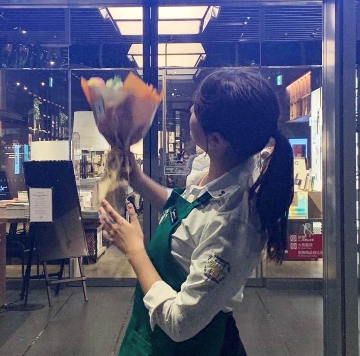
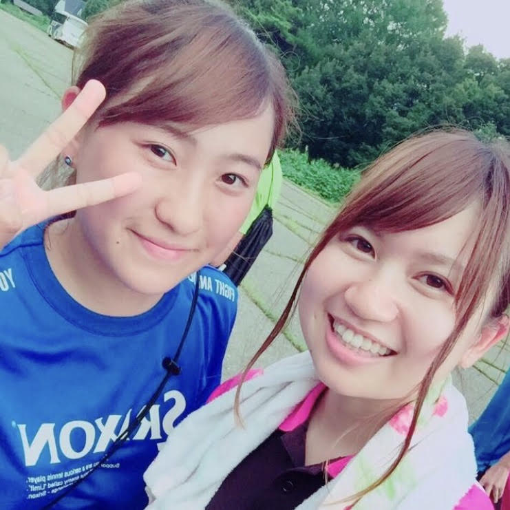
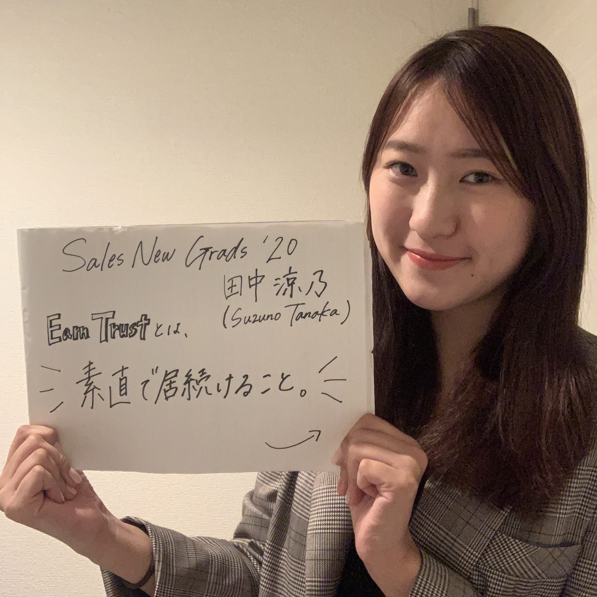

Welcome to my page!
こんにちは！ZUNOです！
初めてのホームページ作成で
上手くいっているのかも不安です。
私の趣味などについて書かせていただきます！


大学の4年間はテニスサークルに所属していました！
２，３年生の時はサークルの代表もしていました。 テニスの実力はないですが、ダブルスが大好きです！＜br＞ 一緒にテニスしてくれる方がいらしたら、お手柔らかにお願いします…。
まだAWSにJoinして数日しかたっていませんが、キャパオーバーで付いていくのに必死です。
しかし、優秀な同期と素晴らしい先輩方と毎日新しいことを学べて嬉しい限りです！
これからも末永く皆様よろしくお願いいたします！！

☟ Follow me ☟
my Instagram 📸